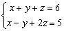

聯立二/三元方程及行列式(包括聯立三元一次方程通解)
程式新版 (舊版保留在網頁下方)
程式參考了網友roviury意見進行修改。
更新日期: 2010年4月22日
● 新版程式較舊版短一些，第二個程式(多2 bytes)可保留M記憶作儲存臨時數據之用。
● 可計三階行列式
● 可計聯立二元一次方程及其方程組行列式
● 可計聯立三元一次方程及其方程組行列式
● 若聯立三元一次方程有無限解，可以顯示方程組的通解
● 可以直接從兩條聯立三元一次方程找出其通解，因此可以作為解方程的步驟
● 分數版，輸入係數為整數，答案會以分數形式表示，建建議將計數機預先設定為假分數形式表示(按 SHIFT SETUP → → 2 )。
程式需要在 REG Lin 模式下執行，因此在選擇新程式位置後，按 5 1 選用REG Lin模式。
注意 : 若果不用記存答案，程式中綠色部份可以不輸入 ，第一個程式長度變為168 bytes，第二個程式則為170 byes。藍色的英文字為統計模式中的變數(n 按 shift 1 3 ，x為平均x 按 shift 2 1 1，y為平均y 按 shift 2 1 → 1)，FreqOn 按 Shift MODE ← ← 1。
第一個程式 (167 bytes 或 171 bytes)
FreqOn: ?→D: ?→C: ?→B: ?→A: ?→X: ?→Y: ?→M:
DY - CX , BX - DM ; CM - BY DT: ?→X:
CX - AY→Y: AM - BX→M: Lbl 0: M┘n→D: Y┘n→C:
y┘n→B: x┘n→A: ?→D: ?→C: ?→B: ?→A:
An - CM - BY→A: Dn + Cy + Bx→D◢ A2 = - D2 => Goto 0:
A┘D→A◢ (M + yA)┘n→B◢ (Y + xA)┘n→C
第二個程式 (169 bytes 或 173 bytes，使用記憶A, B, C, D, X及Y)
FreqOn: ?→D: ?→C: ?→B: ?→A: D: ?→D: ?→X: ?→Y:
AnsX - CD , BD - AnsY ; CY - BX DT: ?→D:
CD - AX→X: AY - BD→Y: Lbl 0: Y┘n→D: X┘n→C:
y┘n→B: x┘n→A: ?→D: ?→C: ?→B: ?→A:
An - CY - BX→A: Dn + Cy + Bx→D◢ A2 = - D2 => Goto 0:
A┘D→A◢ (Y + yA)┘n→B◢ (X + xA)┘n→C
程式另一版本(169 - 175 bytes) :將通解由預設 x=t改為 z=t，較接近習慣的用法，操作上容易一點。
例題1: 解聯立方程 :
按 Prog 1 再按 1 EXE 1 EXE 1 EXE 6 EXE 1 EXE -1 EXE 2 EXE 5 EXE 1 EXE 3 EXE 1 EXE 10 EXE
(顯示方程組行列式為 -2) EXE (顯示x=1) EXE (顯示y=2) EXE (顯示z=3)
程式若有綠色程式碼，執行完成後，按 RCL A 、RCL B、RCL C及RCL D分別顯示x、y、z的值及方程組行列式的值。
例題2: 解以下聯立二元一次方程

按 Prog 1 再按
EXE (不輸入數值) 1 EXE 1 EXE 7 EXE
EXE (不輸入數值) 1 EXE -1 EXE 1 EXE (顯示4) EXE (顯示3)
因此解答為 x = 4 及 y = 3.
程式執行完成後，請按AC中止程式
x的值、y的值及方程組行列式的值分別儲存於記憶D、C及n中。
例題3: 計算下列的行列式:

按 Prog 1 再按 1 EXE 2 EXE 3 EXE EXE (不輸入數值)
7 EXE 8 EXE 9 EXE EXE (不輸入數值)
6 EXE 5 EXE 2 EXE EXE (不輸入數值，最後顯示行列式的值為12)
程式若有綠色程式碼，執行完成後，請按AC中止程式。行列式的值儲存於記憶D。
例題4: 解聯立方程 :

按 Prog 1 再按 1 EXE 1 EXE 1 EXE 6 EXE 1 EXE -1 EXE 2 EXE 5 EXE 3 EXE
1 EXE 4 EXE 17 EXE (顯示行列式為0) EXE
(注意此時沒有Disp，並且有?D號，表示有無限解，顯示y的解，常數項為7/3)
EXE (顯示z的解，常數項為11/3)
EXE (顯示y的解，t的係數為 -1/3)
EXE (顯示z的解，t的係數為 -2/3)
因此通解為:
x = t
y = 7/3 - t/3
z = 11/3 - 2t/3
程式執行完成後，請按AC中止程式。 y,z的常數項及y,z的係數分別儲存在記憶D, C, B, A中。
例題5: 求下列聯立方程的通解:

按 Prog 1 再按 1 EXE 1 EXE 1 EXE 6 EXE 1 EXE -1 EXE 2 EXE 5 EXE
(注意此時有?D號，顯示y的解，常數項為7/3)
EXE (顯示z的解，常數項為11/3)
EXE (顯示y的解，t的係數為 -1/3)
EXE (顯示z的解，t的係數為 -2/3)
因此通解為:
x = t
y = 7/3 - t/3
z = 11/3 - 2t/3
程式執行完成後，請按AC中止程式。y,z的常數項及y,z的係數分別儲存在記憶D, C, B, A中。
註: 若方程組為 a1x + b1y + c1z = d1 , a2x + b2y + c2z = d2 , a3x + b3y + c3z = d3
程式的限制條件為: b1c2≠b2c1
注意: 如果程式在輸入第二條方程後出現錯誤 Math ERROR，代表違反限制條件為: b1c2≠b2c1， 若果是計算聯立三元一次問題，請改為先輸入第三組方程即可。如果程式在輸入第三條方程後出現錯誤 Math ERROR，代表方程組方程無解。
返回 CASIO fx-50FH、fx-3650P II、fx-50FH II及fx-50F PLUS 程式集

舊版程式
程式編寫日期: 2007年8月15日
程式需要在 SD 模式下執行，因此在選擇新程式位置後，按 4 選用SD模式。
注意: 若果不用記存答案，程式中綠色部份可以不輸入，程式長度變為170 bytes。藍色的英文字為統計模式中的變數(n 按 shift 1 3 ，x為平均x 按 shift 2 1)
程式 (170 bytes 或 174 bytes)
ClrStat: ?→D: ?→C: ?→B: ?→A: ?→X: ?→Y: ?→M:
DY - CX ; CM - BY DT: BX - DM→X: ?→D:
CD - AY→Y: AM - BD→M: Lbl 0: M┘n→D:
Y┘n→C: X┘n→B: x┘n→A: ?→D: ?→C: ?→B:
?→A: An - CM - BY→A: Dn + CX + Bx→D◢
A2 + D2=0 => Goto 0: A┘D→A◢
(M + XA)┘n→B◢ (Y + xA)┘n→C
程式小數版 (164 - 170 bytes)
程式另一版本(168 - 174 bytes) :將通解由預設 x=t改為 z=t，較接近習慣的用法，操作上容易一點。